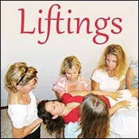

LIFTINGS
- …
LIFTINGS
- …
-
You can be lifted.
- Liftings
- Next Culture Shamanism
- Experiments - Experimenting means to practice simple skills that build together into greater competence.- Competence to one woman looks like magic to another.- Magic is competence in an uncommon dimension.- Let the magic roll.- Matrix Code - LIFTINGS.00- Matrix Code - LIFTINGS.00- Matrix Code - LIFTINGS.00- Matrix Code - LIFTINGS.00
 - Be Lifted By The Earth- Matrix Code - LIFTINGS.00- Matrix Code - LIFTINGS.00
- Be Lifted By The Earth- Matrix Code - LIFTINGS.00- Matrix Code - LIFTINGS.00 - NOTE:This website is a- Bubble in the Bubble Map- StartOver.xyz- doorway- experiments- upgrade your thoughtware- point of origin- create- possibility- knowledge- about. Your- thoughtware- with. When you- change your thoughtware- liquid state- reorganizes- feelings- emotions- upgrading your thoughtware- build matrix- consciousness (archived — not captured)- low drama- reactivity- collectively build- responsibly- LIFTINGS.00to log your Matrix Point for reading this website on- StartOver.xyz